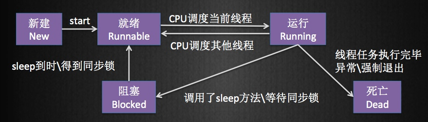

iOS 里的多线程
· NSThread 可以直接操作线程
· GCD: Grand Central Dispatch (GCD)是Apple开发的一个多核编程的较新的解决方法。它主要用于优化应用程序以支持多核处理器以及其他对称多处理系统。它是一个在线程池模式的基础上执行的并行任务。
· NSOperation 在GCD之上的封装，更适合添加操作之间的依赖关系。
· NSThread 可以直接操作线程
· GCD: Grand Central Dispatch (GCD)是Apple开发的一个多核编程的较新的解决方法。它主要用于优化应用程序以支持多核处理器以及其他对称多处理系统。它是一个在线程池模式的基础上执行的并行任务。
· NSOperation 在GCD之上的封装，更适合添加操作之间的依赖关系。
线程是程序中一个单一的顺序控制流程。进程内有一个相对独立的、可调度的执行单元，是系统独立调度和分派CPU的基本单位指令运行时的程序的调度单位。在单个程序中同时运行多个线程完成不同的工作，称为多线程。
1.进程是资源分配的基本单位。所有与该进程有关的资源，都被记录在进程控制块PCB中。以表示该进程拥有这些资源或正在使用它们。
2.进程也是抢占处理机的调度单位，它拥有一个完整的虚拟地址空间。当进程发生调度时，不同的进程拥有不同的虚拟地址空间，而同一进程内的不同线程共享同一地址空间。
3.与进程相对应，线程与资源分配无关，它属于某一个进程，并与进程内的其他线程一起共享进程的资源。
4.线程是进程中的一个单元，他是不能独立运行的，他必须依赖某个进程。
·使用线程可以把占据时间长的程序中的任务放到后台去处理
·用户界面的更新和交互是不能被阻塞的，耗时操作是不能放在主线程的
·当CPU是多核的时候，不同的进程可以实现并行，这样就提高了程序的运行效率
·有些任务并不是连续的，需要等待，比如网络收发数据、用户输入等, 这些操作并不需要等到执行完成，二是需要有变化才操作。
4.1 开辟过多线程的问题
·系统需要为线程开辟存储空间来管理他，线程过多，会占用大量内存。
·线程是通过CPU来调度的，过多的线程会加大CPU的负担，会增加耗电量，还会让机器发烫。
4.2 其他问题
·多个线程同时访问同一数据的访问，要确保数据的安全
·线程死锁

1.线程创建后放到等待队列中，等待CPU的调度，所以新建只有到就绪一种转换。
2.就绪的是在等待的过程中，没有被CPU执行，不会和其他的线程争夺资源，所以会会变成阻塞状态，只会在运行的状态里切换。
3.运行的线程可以变成就绪、阻塞或者死亡的状态，当时间片到后，线程会进入到就绪状态，当某个线程得不到资源，会被阻塞，当线程执行完成后，线程会死亡。
4.线程死亡后，不会保留线程相关信息，会释放掉占用的内存，所以死亡的线程是无法逆转的。就不可以转成其他几种状态。
线程间的通信机制实现起来则相对简单，主要包括互斥锁、条件变量、读写锁和线程信号等。
6.1 互斥锁
互斥锁基本原理：互斥锁以排他的方式防止数据被并发修改。当多个线程共享相同的内存时，需要确保每个线程看到的数据是一样的。如果是只读，那么一定是一样的。如果是可读可写，在一个线程操作一个内存区域时，包含三个步骤，即读出数据，修改数据，写回数据。如果该线程在没有写回数据前，另一个线程来访问同一个区域，如果是读，得不到最新的数据状态，如果是写，则会造成数据覆盖等问题。[12306购票]
互斥锁就两个状态：开锁（0），上锁（1）。将某个共享资源和互斥锁绑定后，对该共享资源的访问操作如下：
A】在访问资源前，首先申请该互斥锁，如果在开锁状态，则申请到该锁对象，并立即占有该锁（锁定）。以防其他线程访问修改此资源。如果该锁处于锁定状态，默认阻塞等待。
B】原则上只有锁定该互斥锁的进程才能释放此互斥锁
6.2 条件变量
条件变量通信机制：
1、条件变量基本原理：条件变量的出现，可以弥补互斥锁的缺陷，有些问题仅仅靠互斥锁无法解决。但是条件变量不能单独使用，必须配合互斥锁一起实现对资源的互斥访问
6.2 读写锁
1、读写锁基本原理：在对数据的读写操作时，往往是读占主要部分。为了满足当前能够允许多个读出，但只允许一个写入的需求。线程提供了读写锁来实现。读写锁基本原则如下：
A】如果有其他线程读数据，则允许其他线程执行读操作，但是不允许写操作。
B】如果有其他线程申请了写锁，则其他线程既不能申请读锁，也不能申请写锁
6.3 线程信号：
线程是一种轻量级的进程，因此进程的信号同样适用于线程。不过相对于进程信号，线程拥有与信号相关的私有数据——线程信号掩码，则就决定了线程在信号操作时具有以下特性：
A】每个线程可以先别的线程发送信号，pthreadkill（）函数用来完成这一操作。
B】每个线程都可以设置自己的阻塞集合。pthreadsigmask（）用来完成这一操作。类似于进程中的sigprocmask（）函数。主进程创建出来的线程继承主进程的掩码。
C】每个线程需要设置针对某信号的处理方式，但同一个进程中对某信号的处理方式只能有一个有效，即最后一次设置的处理方式。即在所有的线程里，同一信号在任何线程里的对该信号的处理一定相同
D】如果别的进程向当前进程发来一个信号，具体由哪个线程去处理，是未知的。
注：如果有不准确的地方，欢迎大家来吐槽。QQ：1392984568 一米阳光 （iOS 修炼者 ）